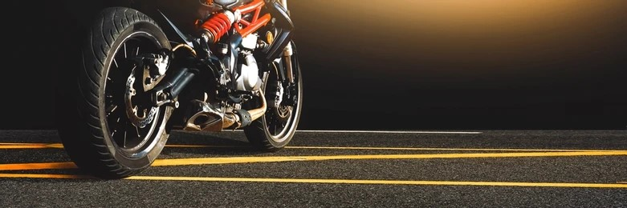

A segurança é a prioridade número um ao pilotar uma moto. Aqui estão algumas dicas essenciais para garantir uma pilotagem segura:
Use sempre capacete, jaqueta, luvas, calças e botas apropriadas. Equipamentos de proteção ajudam a reduzir o risco de lesões em caso de acidentes e garantem maior conforto durante a pilotagem.
É crucial manter uma distância segura do veículo à sua frente. Isso permite tempo suficiente para reagir a paradas bruscas e imprevistos, reduzindo o risco de colisões.
Verifique as condições da estrada antes de sair. Poeira, buracos, óleo ou água podem tornar a pilotagem perigosa. Adapte sua velocidade e estilo de pilotagem às condições do ambiente.
Antes de mudar de faixa ou fazer uma manobra, sempre verifique seus espelhos retrovisores. Estar ciente do que está ao seu redor é fundamental para evitar acidentes.
Evite ultrapassagens perigosas e manobras arriscadas. Mantenha-se dentro dos limites de velocidade e siga as regras de trânsito. A prudência é essencial para uma pilotagem segura.
Realizar manutenções regulares e inspeções periódicas garante que sua moto esteja em ótimas condições de funcionamento. Isso inclui verificar freios, pneus e sistemas elétricos.
A segurança na pilotagem deve ser sempre uma prioridade. Siga estas dicas e esteja sempre atento às condições da estrada e do seu equipamento. Pilotar com responsabilidade não apenas protege você, mas também os outros ao seu redor.